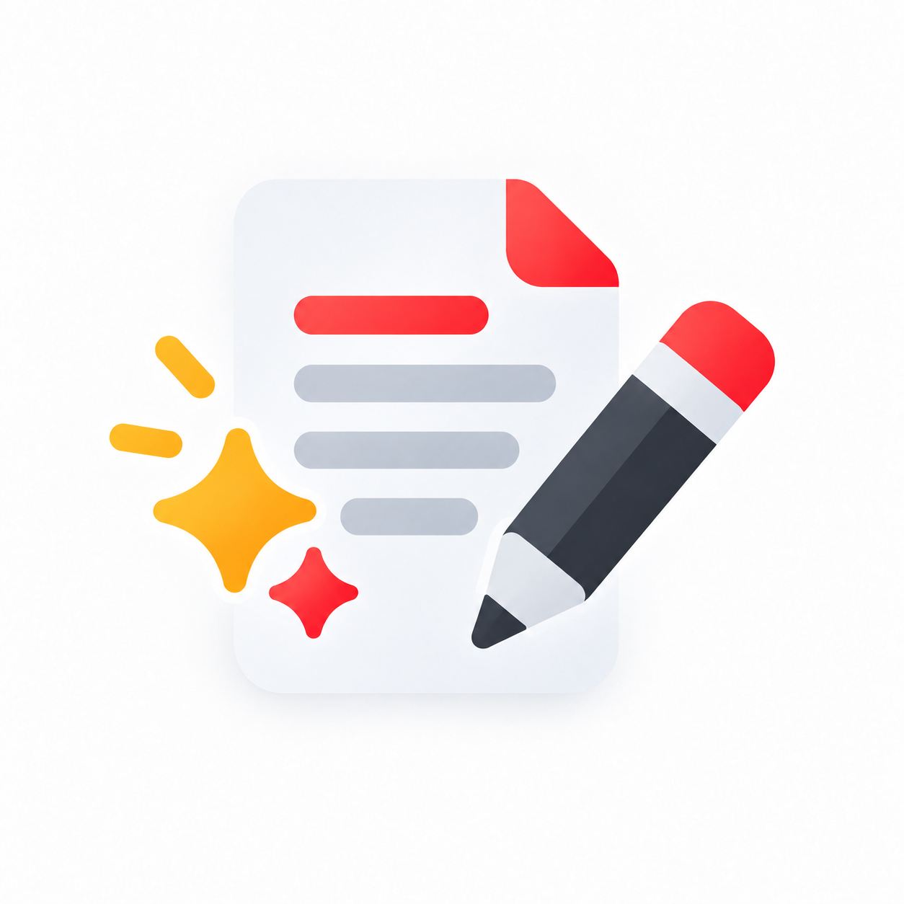
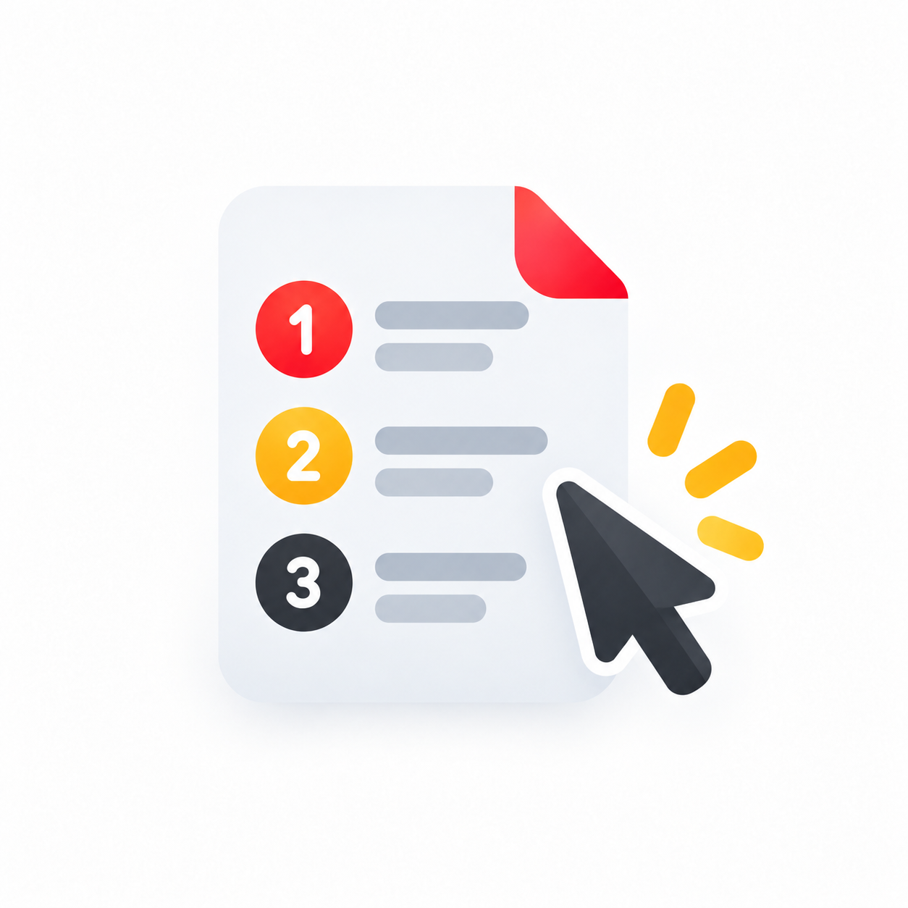
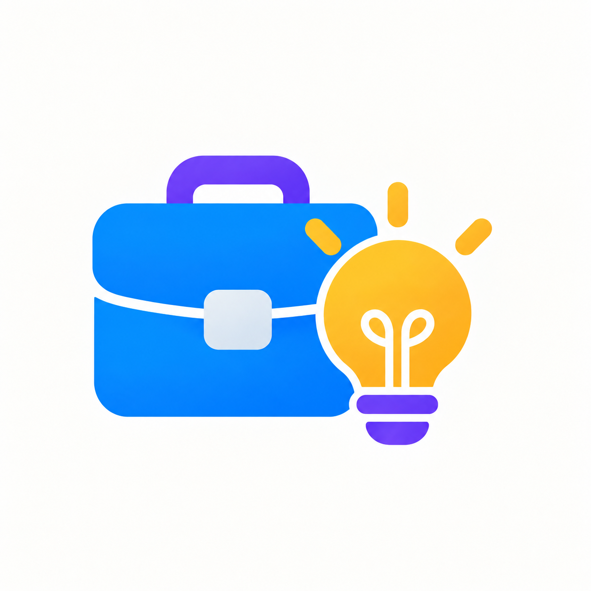
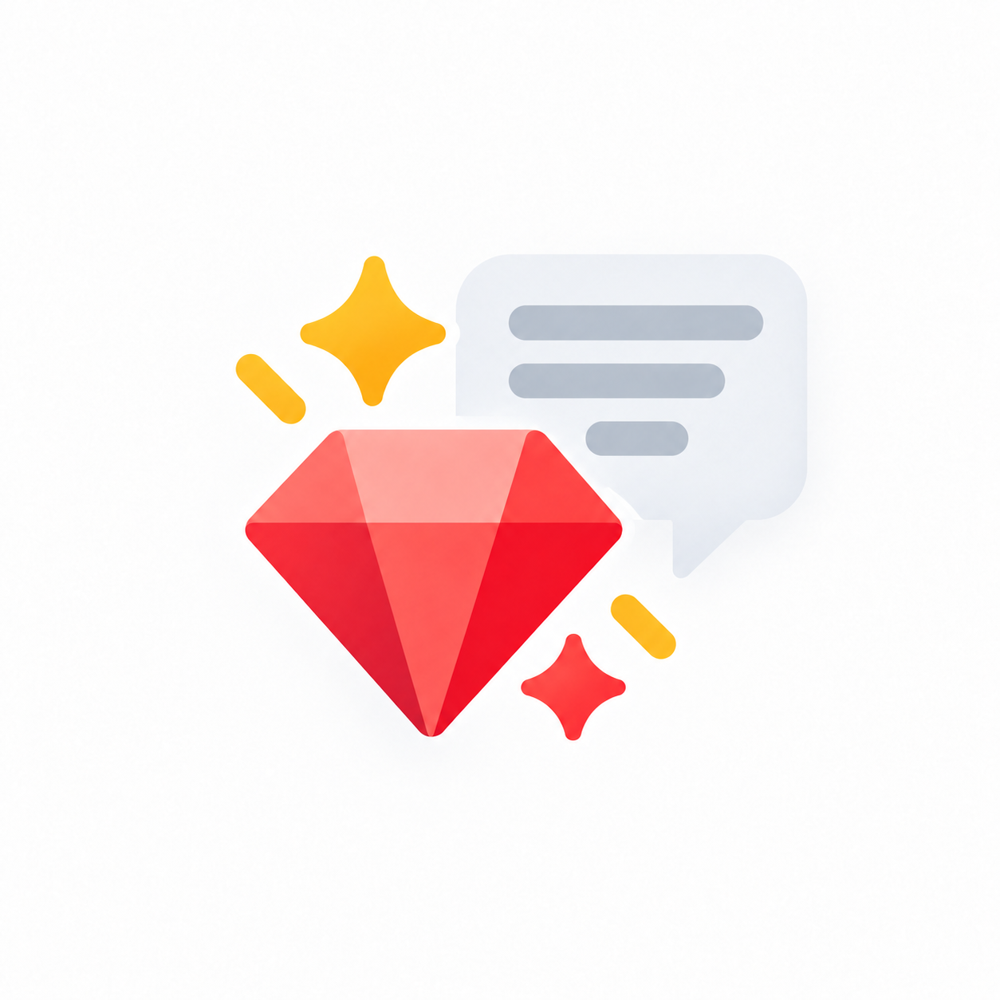

Återanvänd material du redan har
Från befintligt material till nya versioner, språk eller format.
CaseÖppna →
Fyra korta, anonymiserade case från studerandesamarbeten. Läs problemet, idén och vad ett annat litet företag kan ta med sig.

Från befintligt material till nya versioner, språk eller format.

Låt AI hjälpa dig hitta skillnader och sådant som behöver kontrolleras.

Använd AI som stöd när du vill hitta mönster och frågor i din data.

Använd tidigare texter som stöd för att skapa nya utkast med rätt ton.